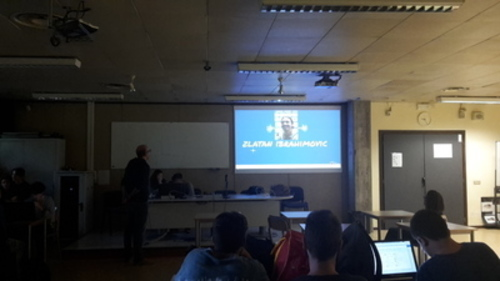

ALTERNANZA SCUOLA-LAVORO
VIDEO STORYTELLING
English version
 Il 20 ottobre si e’ tenuta al Blaise Pascal la nostra quarta attività riguardante l’alternanza scuola-lavoro.
Le attività della giornata sono state proposte da Nicola Bigi, membro di Tiwi.
Tiwi è uno studio creativo specializzato nell’ideazione e produzione di contenuti video e interattivi, per il web e la televisione. Tiwi unisce immagini e parole: valorizza, comunica, diverte. Creano contenuti memorabili: video in grafica, in girato e applicazioni interattive.
Tutto questo con grazia, audacia e molta perizia.
 L’azienda ha collaborato e lo fa tutt'ora con altre importanti aziende come SKY o Ferrari , per le quali ha creato delle serie o vari spot.
Dopo averci spiegato cos'è la loro azienda, ci hanno mostrato 2 video creati da loro: uno per SKY(più precisamente SKY Atlantic) e l’altro per la serie televisiva Beautiful.
Dopo la visione di essi, Nicola, ci ha proposto di dividerci in gruppi e creare un nostro video su un argomento a scelta e poi esporre e presentare il lavoro finito.
L’azienda ha collaborato e lo fa tutt'ora con altre importanti aziende come SKY o Ferrari , per le quali ha creato delle serie o vari spot.
Dopo averci spiegato cos'è la loro azienda, ci hanno mostrato 2 video creati da loro: uno per SKY(più precisamente SKY Atlantic) e l’altro per la serie televisiva Beautiful.
Dopo la visione di essi, Nicola, ci ha proposto di dividerci in gruppi e creare un nostro video su un argomento a scelta e poi esporre e presentare il lavoro finito.